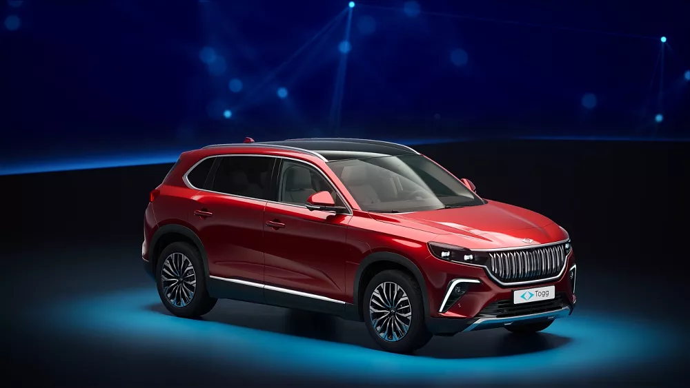

<! DOCTYPE html>
    <html lang="en">

    </html>

    <head>
        <meta charset="UTF-8">
        <meta http-equiv="X-UA-Compatible" content="IE=edge">
        <meta name="viewport" content="width=device-width,
initial-scale=1.0">
        <link rel="stylesheet" href="https://cdnjs.cloudflare.com/ajax/libs/font-awesome/6.4.0/css/all.min.css"
            integrity="sha512-iecdLmaskl7CVkqkXNQ/ZH/XLlvWZOJyj7Yy7tcenmpD1ypASozpmT/E0iPtmFIB46ZmdtAc9eNBvH0H/ZpiBw=="
            crossorigin="anonymous" referrerpolicy="no-referrer" />
        <title>Benim Kişisel Website</title>
        <link rel="stylesheet" href="styles/style.css" />
    </head>

    <body>

        <header class="header">
            <a href="#" class="logo">
                

            </a>
            <nav class="navbar">
                <a href="#" class="active">Anasayfa</a>
                <a href="#">Bilim Gündemi</a>
                <a href="#">Projelerim</a>
                <a href="#">Foto Galeri</a>
                <a href="#">Google Maps</a>
                <a href="#">Blog</a>
                <a href="#">Bize Ulasin</a>

            </nav>

            <div class="buttons">
                <button>
                    <i class="fas fa-search"></i>
                </button>
                <button>
                    <i class="fa-solid fa-bell"></i>
                </button>
                <button>
                    <i class="fas fa-bars"></i>
                </button>
            </div>


        </header>
        <!--! Home section baslangic   -->
        <section class="home">
            <div class="content">
                <h3>YAZILIMCILAR</h3>
                <P>Kisisel web siteme hos geldiniz burada sizin merak ettiginiz sorularin cevaplarina ve benim
                    hakkimdaki birçok bilgiye ulasmis olacaksiniz. </P>
                <a href="#" class="btn">Deneme</a>
            </div>
        </section>
        <!--! Home section bitis  -->

        <!--! Gündemler baslangic  -->
        <section class="gundem">
            <h1 class="heading">BİLİM <span>GÜNDEMİ</span></h1>
            <div class="box-container">
                <div class="box">
                    <div class="box-head">
                        
                        <span class="gundem-category">Askeri</span>
                        <h3>TUSAŞ Milli Muharip Uçak</h3>
                        <div class="price">Milli Muharip Uçak TUSAŞ tarafindan geliştirilen çift motorlu, düşük
                            görünürlük, sensör füzyonu, hava-hava ve havadan-yere hakimiyetlerde üstün özellikleri
                            bulunan beşinci nesil jet muharip uçak projesi artik üretime basladi</div>
                    </div>
                    <div class="box-bottom">
                        <a href="#" class="btn"> Gündemi kaydet </a>
                    </div>
                </div>
                <div class="box">
                    <div class="box-head">
                        
                        <span class="gundem-category">Teknoloji</span>
                        <h3>TOGG</h3>
                        <div class="price">Türkiye'nin Otomobili Girişim Grubu veya kisaca Togg, Türkiye merkezli bir
                            otomobil üretici şirkettir. Şirket, fikrî mülkiyet haklarina sahip olduğu ilk otomobilini 29
                            Ekim 2022 seri üretime hazir hâle geldi</div>
                    </div>
                    <div class="box-bottom">
                        <a href="#" class="btn"> Gündemi kaydet </a>
                    </div>
                </div>
                <div class="box">
                    <div class="box-head">
                        
                        <span class="gundem-category">Ekonomi</span>
                        <h3>320 Milyar Metreküp Doğal Gaz!</h3>
                        <div class="price">Türkiye, tarihinin en büyük doğalgaz keşfini Karadeniz'de gerçekleştirdi.
                            Fatih sondaj gemimiz, 20 Temmuz 2020 tarihinde başladiği Tuna-1 kuyusundaki sondajinda 320
                            milyar metreküp doğalgaz rezervi keşfetmiş durumda</div>
                    </div>
                    <div class="box-bottom">
                        <a href="#" class="btn"> Gündemi kaydet </a>
                    </div>
                </div>
                <div class="box">
                    <div class="box-head">
                        
                        <span class="gundem-category">Bilim</span>
                        <h3>Türksat 5A Uzayda!</h3>
                        <div class="price">Türksat 5A, 8 Ocak 2021 tarihinde Türkiye saati ile 05.15'te SpaceX
                            firmasinin Falcon 9 roketiyle ABD'deki Cape Canaveral Üssü'nden uzaya gönderilen haberleşme
                            uydusudur</div>
                    </div>
                    <div class="box-bottom">
                        <a href="#" class="btn"> Gündemi kaydet </a>
                    </div>
                </div>
            </div>


        </section>
        <!--! Gündemler bitis -->

        <!--! Projelerim baslangic  -->
        <section class="products">
            <h1 class="heading">Projelerim <span> Hakkinda</span></h1>
            <div class="box-container">
                <div class="box">
                    <div class="box-head">
                        <span class="title">Savunma ve Taarruz Araci</span>
                        <a href="#" class="name">Su Alti Form</a>
                    </div>
                    <div class="image">
                        
                    </div>
                    <div class="box-bottom">
                        <div class="info">
                            <b class="price">Düşman denizalti deşifre etme, donanma ve uçak gemisi imha etme, keşfetmek veya görüntü kaydetmek gibi birçok sayisiz görevde kullanilabilirler. İç kabuğu karbonfiberden, diş kabuğu silikondan ve içerisi sinyal emici boyalardan oluşuyor (sonar alanina girmemek için).  Yapisinda GPS, sonar, patlayici, 2 çeşit lens ve pil bulunmakta. </b>

                        </div>
                        <div class="product-btn">
                            <a href="#" ><i class="btn"> Projeyi kaydet </i></a>
                        </div>
                    </div>
                </div>
                <div class="box">
                    <div class="box-head">
                        <span class="title">Savunma ve Taarruz Araci</span>
                        <a href="#" class="name">Su Üstü Form</a>
                    </div>
                    <div class="image">
                        
                    </div>
                    <div class="box-bottom">
                        <div class="info">
                            <b class="price">Akustik koordinat sistemiyle koordine edilecek, akustik ses dalgalariyla yönlendirilecektir. Suyun altindan firlayan baliklarin yüzgeçleri açilip
                                kanat formuna gelir ve geminin yan yüzeyine de ihtiyaç halinde ulaşilabilir. (Bazi uçak gemileri geminin en dip kismindan hasar alsa bile batmayabiliyor.)
                               </b>

                        </div>
                        <div class="product-btn">
                            <a href="#" ><i class="btn"> Projeyi kaydet </i></a>
                        </div>
                    </div>
                </div>
            </div>
        </section>


        <!--! Projelerim bitis -->
    </body>

    </html>